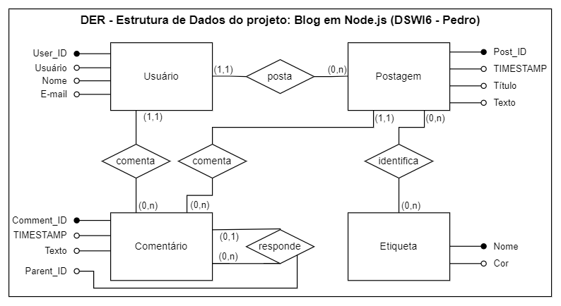

Descrição do projeto
O atual projeto busca desenvolver um blog onde usuários autenticados podem realizar postagens. Cada postagem pode ser identificada por etiquetas e possuír uma árvore de comentários.
As páginas exibem cabeçalho, menu de navegação, bara lateral com menu de etiquetas, conteúdo principal exibindo uma ou mais postagens e o rodapé.
Estrutura de dados
O projeto do blog deverá implementar a seguinte estrutura em seu banco de dados:
Página principal
Na página principal, como de costume, todas as postagens são paginadas, apresentadas na forma resumida em ordem cronológica decrescente e identificadas por título, data, autor e possíveis etiquetas.
Etiquetas
As etiquetas agrupam postagens diversas. Quando clicada, deve retornar, no mesmo formato da página inicial, apenas aquelas postagens sob a mesma etiqueta.
Os comentários e o conteúdo completo da postagem são exibidos na área do conteúdo principal quando clicamos sobre uma postagem.